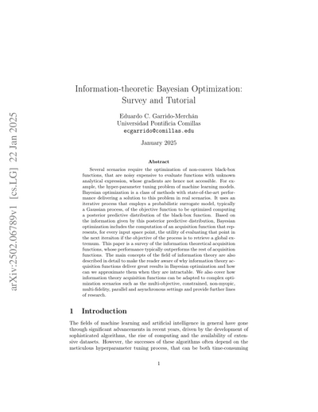
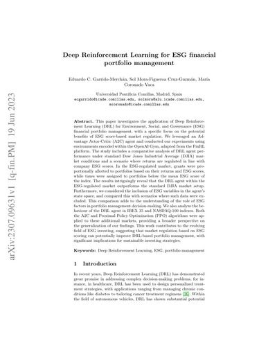
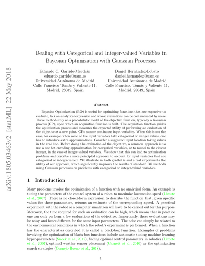
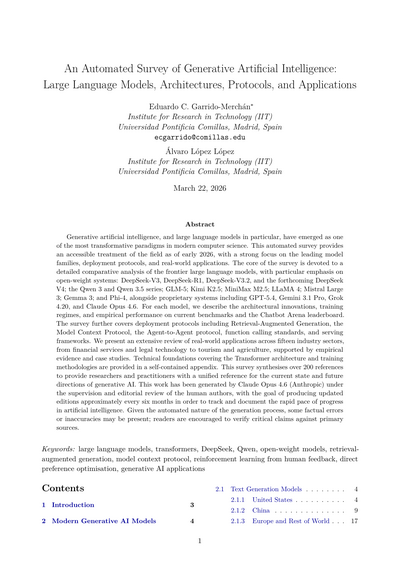
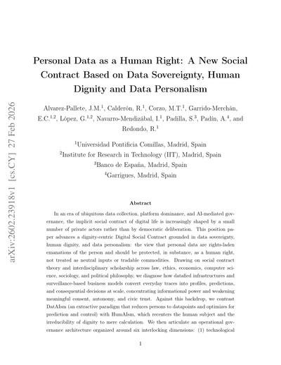
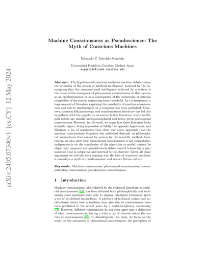
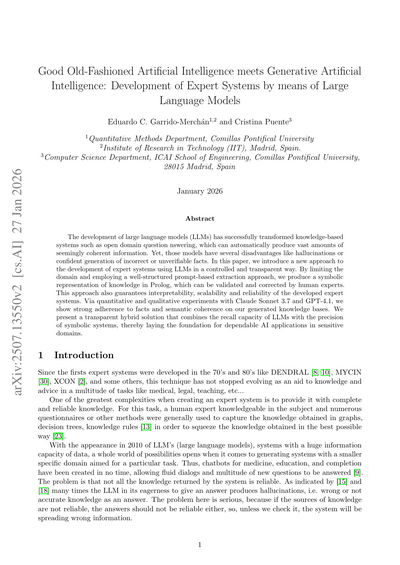
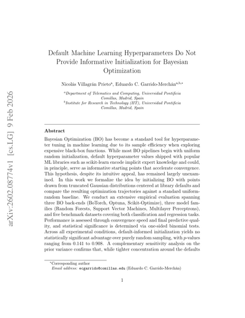
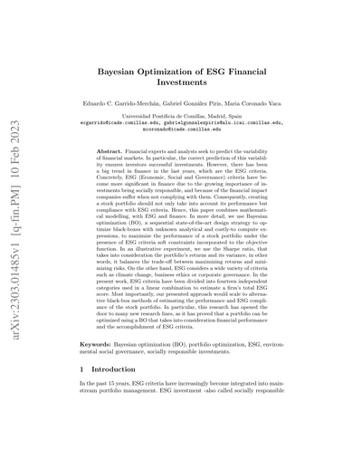

ResearchInvestigación
Probabilistic machine learning, optimization under uncertainty, and applied AI across finance, symbolic reasoning, and generative models. Aprendizaje automático probabilístico, optimización bajo incertidumbre e IA aplicada a finanzas, razonamiento simbólico y modelos generativos.

Bayesian Optimization
Information-theoretic acquisition functions, multi-objective optimization, and optimization with constraints and noise. Funciones de adquisición basadas en teoría de la información, optimización multiobjetivo y optimización con restricciones y ruido.
SurveyRevisión · 2025
Reinforcement LearningAprendizaje por refuerzo
Deep RL methodology: policy optimization, value function approximation, and explainability of learned policies for sequential decision-making. Metodología de RL profundo: optimización de políticas, aproximación de funciones de valor y explicabilidad de las políticas aprendidas para la toma de decisiones secuencial.
MethodologyMetodología · XAI
Probabilistic MethodsMétodos probabilísticos
Gaussian processes, extreme value estimation, and probabilistic numerical methods for uncertainty quantification. Procesos gaussianos, estimación de valores extremos y métodos numéricos probabilísticos para la cuantificación de la incertidumbre.
Gaussian ProcessesProcesos gaussianos
Generative AI & LLMsIA generativa y LLMs
Large language model evaluation, automated survey generation, and applications across 15 industry sectors. Evaluación de modelos de lenguaje, generación automatizada de revisiones y aplicaciones en 15 sectores industriales.
72 pp. · 200+ refsrefs.
AI Ethics & Data SovereigntyÉtica de la IA y soberanía de datos
Data sovereignty frameworks, intersectional bias analysis, and the technical dimensions of responsible AI deployment. Marcos de soberanía de datos, análisis interseccional de sesgos y las dimensiones técnicas del despliegue responsable de IA.
Data PersonalismPersonalismo de datos · 2026
Machine ConsciousnessConciencia artificial
Why computational intelligence and phenomenal consciousness are independent. Bridging AI research with philosophy of mind. Por qué la inteligencia computacional y la conciencia fenoménica son independientes. Un puente entre la IA y la filosofía de la mente.
Philosophy of AIFilosofía de la IA
Neurosymbolic AIIA neurosimbólica
Bridging GOFAI and generative AI: expert systems development via large language models with symbolic knowledge representation in Prolog. Tendiendo puentes entre la GOFAI y la IA generativa: desarrollo de sistemas expertos mediante modelos de lenguaje con representación simbólica del conocimiento en Prolog.
GOFAI · LLMs
Hyperparameter OptimizationOptimización de hiperparámetros
Automating model selection at scale with Bayesian optimization and principled uncertainty quantification. Automatización de la selección de modelos a escala con optimización bayesiana y cuantificación rigurosa de la incertidumbre.
AutoML · 2026
ESG Quantitative FinanceFinanzas cuantitativas ESG
Bayesian optimization and machine learning for ESG portfolio construction, climate risk analysis, and sustainable investment strategies. Optimización bayesiana y aprendizaje automático para la construcción de carteras ESG, análisis de riesgo climático y estrategias de inversión sostenible.
ESG · Portfolio OptimizationOptimización de carterasFeatured PaperArtículo destacado
An Automated Survey of Generative Artificial Intelligence: Large Language Models, Architectures, Protocols, and Applications Una revisión automatizada de la inteligencia artificial generativa: modelos de lenguaje, arquitecturas, protocolos y aplicaciones
Generative artificial intelligence, and large language models in particular, have emerged as one of the most transformative paradigms in modern computer science. This automated survey provides an accessible treatment of the field as of early 2026, covering frontier LLMs (GPT-5.4, Gemini 3.1, Claude Opus 4.6, DeepSeek, Qwen, GLM-5), deployment protocols (RAG, MCP, A2A), and real-world applications across 15 industry sectors. 72 pages, 200+ references. La inteligencia artificial generativa, y en particular los grandes modelos de lenguaje, se han consolidado como uno de los paradigmas más transformadores de la computación moderna. Esta revisión automatizada ofrece un tratamiento accesible del campo a inicios de 2026, cubriendo los LLMs de frontera (GPT-5.4, Gemini 3.1, Claude Opus 4.6, DeepSeek, Qwen, GLM-5), los protocolos de despliegue (RAG, MCP, A2A) y aplicaciones reales en 15 sectores industriales. 72 páginas, más de 200 referencias.
EducationFormación
PhD in Computer Science & TelecommunicationsDoctorado en Informática y Telecomunicaciones
Universidad Autónoma de Madrid
Cum LaudeMSc in Artificial IntelligenceMáster en Inteligencia Artificial
Universidad Politécnica de Madrid
José Cuena AwardPremio José CuenaBSc in Computer EngineeringGrado en Ingeniería Informática
Universidad Pontificia Comillas (ICADE)
Extraordinary AwardPremio ExtraordinarioTeachingDocencia
Undergraduate and graduate courses I have taught at two leading universities in Madrid. Asignaturas de grado y máster que he impartido en dos universidades de referencia en Madrid.
Escuela Politécnica Superior
Universidad Autónoma de Madrid
- Operating SystemsSistemas Operativos
- Artificial IntelligenceInteligencia Artificial
- CompilersCompiladores
Universidad Pontificia Comillas
ICADE — Facultad de Ciencias Económicas y Empresariales
- Machine Learning I
- Inference & RegressionInferencia y Regresión
- StatisticsEstadística
- Frontier AIIA en la Frontera
- Reinforcement Learning
- ProgrammingProgramación
Media & OutreachMedios y divulgación
Commentary and analysis in national press, radio, and academic platforms. Comentarios y análisis en prensa nacional, radio y plataformas académicas.
DeepSeek: todas las claves de la bomba china que tumba a ChatGPT, NVIDIA y las Big Tech
In-depth analysis of DeepSeek-R1 and its impact on the global AI industry, NVIDIA’s valuation, and US–China technology strategy. Análisis en profundidad de DeepSeek-R1 y su impacto en la industria global de la IA, la valoración de NVIDIA y la estrategia tecnológica EE. UU.–China.
Republished in The Objective, El Observador (UY), El Mostrador (CL), CODDII, and 3 more outlets. Republicado en The Objective, El Observador (UY), El Mostrador (CL), CODDII y 3 medios más.
El día en que las máquinas funden su propia religión
Quoted as AI expert in El Mundo’s PAPEL supplement on the Moltbook phenomenon — AI agents and the limits of computational theology. Citado como experto en IA en el suplemento PAPEL de El Mundo sobre el fenómeno Moltbook — agentes de IA y los límites de la teología computacional.
xHUB — Machine Consciousness as Pseudoscience xHUB — La conciencia artificial como pseudociencia
Why computational intelligence and phenomenal consciousness are independent — and why the hype around “sentient AI” is misleading. Por qué la inteligencia computacional y la conciencia fenoménica son independientes — y por qué el bombo en torno a la «IA sintiente» es engañoso.
¿Cómo será la educación universitaria en la era de la inteligencia artificial?
How generative AI is transforming university education — AI agents, academic integrity, and the future of teaching. Cómo la IA generativa está transformando la educación universitaria — agentes de IA, integridad académica y el futuro de la enseñanza.
Visión Global — DeepSeek & Agentic AIVisión Global — DeepSeek e IA agente
Two appearances discussing DeepSeek’s impact on the AI industry and the rise of agentic AI systems in enterprise. Dos intervenciones sobre el impacto de DeepSeek en la industria de la IA y el auge de los sistemas de IA agente en la empresa.
AI Microcredential — GPT-1 & Specialised AI Systems Microcredencial IA — GPT-1 y sistemas de IA especializados
Video lectures on GPT architectures and specialised AI systems for the Comillas AI Micro-credential programme. Videoclases sobre arquitecturas GPT y sistemas de IA especializados para el programa de Microcredencial en IA de Comillas.
Code & ProjectsCódigo y proyectos
Open-source research code, reference implementations, and tutorial notebooks. Bayesian optimization, Gaussian processes, deep RL and educational material. Código de investigación de código abierto, implementaciones de referencia y notebooks de tutorial. Optimización bayesiana, procesos gaussianos, RL profundo y material educativo.
UPM Summer School — GPs & BO
Course notebooks for the Gaussian Processes and Bayesian Optimization summer school at UPM. Notebooks del curso de procesos gaussianos y optimización bayesiana de la escuela de verano de la UPM.
Jupyter · ★ 28ML Books
Curated list of high-quality machine learning books available freely online — a reading map. Lista curada de libros de machine learning de alta calidad disponibles libremente en línea — un mapa de lectura.
Reading listLista de lectura · ★ 12BoTorch Tutorials
Bayesian optimization tutorials in Jupyter / Colab format using BoTorch. Tutoriales de optimización bayesiana en formato Jupyter / Colab usando BoTorch.
Jupyter · ★ 10Spearmint
Bayesian optimization codebase used as the basis for several research papers and PESMOC variants. Código de optimización bayesiana usado como base para varios artículos de investigación y variantes de PESMOC.
Python · ★ 8Parallel PESMOC
Parallel Predictive Entropy Search for Multi-objective BO with Constraints — reference implementation. Parallel Predictive Entropy Search para optimización bayesiana multiobjetivo con restricciones — implementación de referencia.
Python · ★ 6Microeconomic DRL AgentsAgentes DRL microeconómicos
Multi-agent deep reinforcement learning on microeconomic market simulators. Aprendizaje por refuerzo profundo multiagente sobre simuladores de mercados microeconómicos.
Python · DRLAceleracionismo Humanista
Brief notes on AI, analytic philosophy, meta-ethics, and philosophy of mind. Original posts in Spanish. Notas breves sobre IA, filosofía analítica, meta-ética y filosofía de la mente.
Sobre la pretendida cuestionabilidad moral del uso de IA como apoyo en la redacción de manuscritos
A short syllogism, from robust moral realism, showing why using AI as an editorial tool is not only morally unobjectionable but a good in itself. Un silogismo breve, desde el realismo moral robusto, que muestra por qué emplear IA como herramienta editorial no solo no es moralmente cuestionable, sino un bien en sí mismo.
El teorema de No Free Lunch para sistemas políticos: por qué la ideología óptima es una función del tiempo
No ideology is universally optimal because the space of social problems is not stationary. The correct political prescription is, formally, a function of the historical state of the system. Ninguna ideología es universalmente óptima porque el espacio de problemas sociales no es estacionario. La prescripción política correcta es, formalmente, una función del estado histórico del sistema.
Beyond ResearchMás allá de la investigación
Artificial IntelligenceInteligencia artificial
A lifelong fascination with building intelligent systems and pushing the boundaries of what machines can learn. Una fascinación de toda la vida por construir sistemas inteligentes y empujar los límites de lo que las máquinas pueden aprender.
Science FictionCiencia ficción
Greg Egan, Stephen Baxter, Asimov, Lem — stories that take physics seriously and ask what it means to be human. Greg Egan, Stephen Baxter, Asimov, Lem — historias que toman la física en serio y se preguntan qué significa ser humano.
PhilosophyFilosofía
Philosophy of mind, consciousness, metaphysics, and the foundations of artificial intelligence. Filosofía de la mente, conciencia, metafísica y los fundamentos de la inteligencia artificial.
About meSobre mí
I’m 36 years old and the father of two boys. One of them is severely non-verbal autistic, and living with him has made me think very seriously about what it means to do what is best for everyone — about vulnerability, about care, and about how to build a world in which every person, whatever their condition, has a place.
Tengo 36 años y soy padre de dos hijos. Uno de ellos es autísta severo no verbal, y convivir con él me ha hecho reflexionar muy en serio sobre qué significa hacer lo mejor para todos — sobre la vulnerabilidad, sobre el cuidado, y sobre cómo construir un mundo en el que cada persona, sea como sea, tenga un lugar.
When I’m not doing research, I love to read. I’m especially fond of science fiction by Peter Cawdron, Greg Egan, Arthur C. Clarke and Stephen Baxter, and the horror novels of Stephen King and H. P. Lovecraft. I’m also a fan of video games, with NieR: Automata among my favourites for how it weaves mechanics, narrative and philosophy together.
Cuando no estoy investigando, me encanta leer. Disfruto especialmente la ciencia ficción de Peter Cawdron, Greg Egan, Arthur C. Clarke y Stephen Baxter, y la novela de terror de Stephen King y H. P. Lovecraft. También soy aficionado a los videojuegos, con NieR: Automata entre mis favoritos por cómo entrelaza mecánica, narrativa y filosofía.